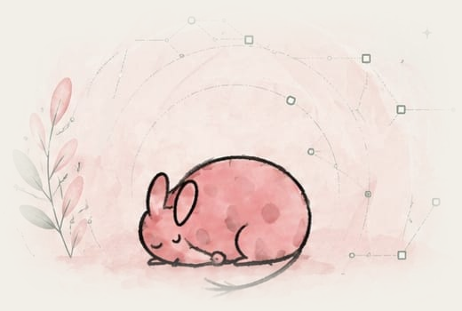
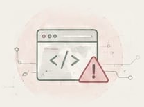
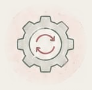
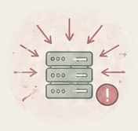

DEFINIÇÃO
Ataques cibernéticos são ações realizadas para explorar sistemas, redes ou dispositivos. Eles podem ter diferentes objetivos, como interromper serviços, acessar dados ou causar prejuízos.


Conheça as principais ameaças do mundo digital e os métodos usados para explorar falhas em sistemas e redes.

Ataques cibernéticos são ações realizadas para explorar sistemas, redes ou dispositivos. Eles podem ter diferentes objetivos, como interromper serviços, acessar dados ou causar prejuízos.
Vulnerabilidades são falhas em sistemas, dispositivos ou comportamentos de usuários que podem ser exploradas para causar danos ou permitir acessos não autorizados.


Existem diversos tipos de ataques cibernéticos, cada um com uma forma diferente de agir. Entre os mais conhecidos estão DDoS, força bruta, exploração de vulnerabilidades, ataques de injeção e ataques que utilizam códigos maliciosos.
Qualquer pessoa ou organização que utilize a internet pode ser afetada por um ataque cibernético. Computadores, celulares, servidores, sites e redes podem se tornar alvos, independentemente do tamanho ou da quantidade de informações armazenadas.

Alguns cuidados podem diminuir os riscos de ataques cibernéticos. Manter sistemas atualizados, utilizar senhas fortes, evitar conteúdos suspeitos e ativar recursos de segurança são medidas importantes. Também é recomendado manter cópias de segurança dos arquivos importantes.